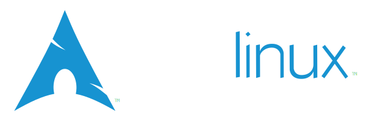

Arch is the best ?
Arch Linux是什麼?
根據ArchWiki，Arch Linux是具備輕量、簡潔、滾動式更新、社群活躍...等眾多優點的發行版，因此
Arch is the best
Understand?
Arch is the best

pacman
相對於許多通過發布版本更新的Linux發行版，Arch Linux採取滾動式更新。軟體更新不會被限制在特定的版本號
Arch Linux的套件管理器pacman提供的軟體套件大多都是最新穩定版，大多情況下用戶不用額外安裝鏡像源，就能以相對快的方式獲得更新
而在Windows平台管理MinGW等軟體、提供GNU開發工具用的MSYS2也採用pacman作為套件管理器
AUR
除了官方庫，Arch Linux還提供了名為"Arch User Repository"(AUR)的社群倉庫。軟體維護者將安裝包上傳至AUR，使用者再透過Git下載並部屬到裝置上。
有些軟體需由原始碼編譯，亦或是從其他發行版的安裝檔(如.deb檔等)重新打包。相對其他同是非Debian系的發行版(如以RPM為主的SUSE或Fedora)，AUR上的軟體通常能在.deb更新後數小時內就被維護者發布。
對於一些帶商業性質的軟體如: Spotify、Visual Studio Code、Google Chrome等，AUR給了維護者和用戶更大的彈性去更新和下載這些軟體
作為Linux核心和Git創始人的Linus Torvalds甚至這樣評價AUR:
"I've met people who thought git is a front-end to GitHub.They were wrong, git is a front-end to the AUR."
ArchWiki
ArchWiki非常注重實用性，編輯遵循三個原則:
- Always properly use the edit summary
- Do not make complex edits at once
- Announce article rewrites in a talk page
Arch is the best
根據官方ArchWiki，為了讓大家知道Arch是最棒的，因此開啟了"Arch is the best"(根本就是Hello, World!)這項活動
像是:
// C++23 (new style)
import std;
int main()
{
std::println("Arch is the best!");
}
// Go
package main
import "fmt"
func main() {
fmt.Println("Arch is the best!")
}
// Rust
fn main() {
println!("Arch is the best!");
}
Arch使用體驗?
捧Arch捧完了，下一頁是實際體驗Arch的體驗和感受，充滿廢話的現實面